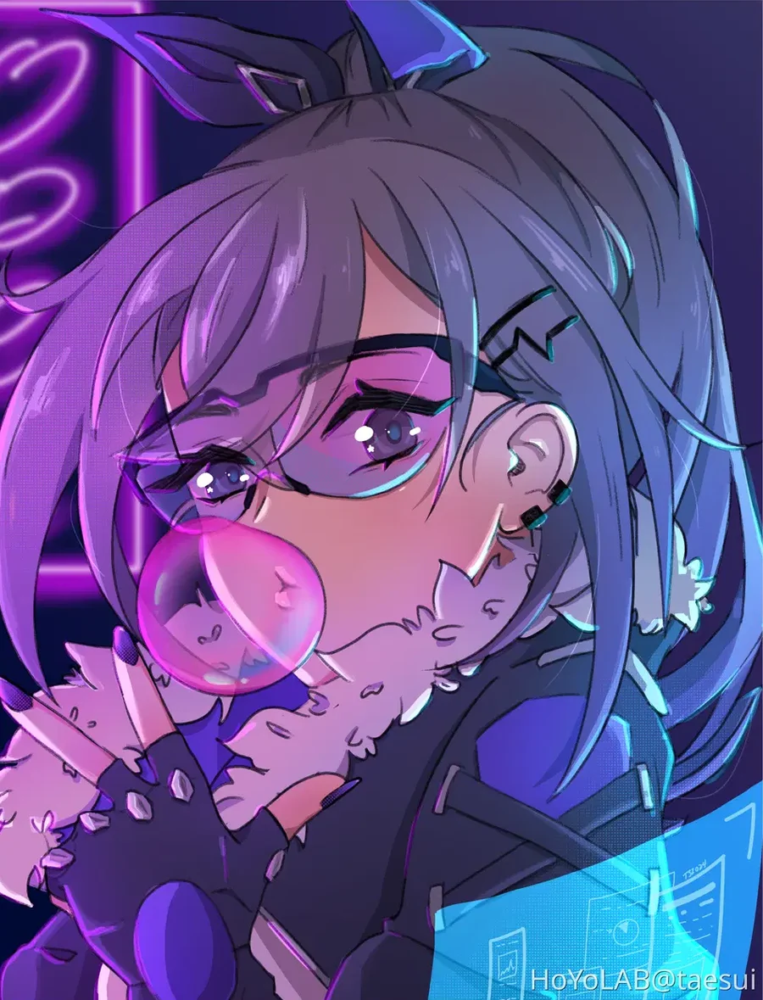

Design
Bannières Discord, PP et miniatures, montées sous Photoshop : compo, light, typo, effets.
voir les créasLV.99 · autodidacte · builder & creator
Moi, c'est Tsubasa. Autodidacte, je suis tombé dans l'informatique par curiosité et j'en ai fait mon terrain de jeu. Du développement au design, de Linux aux infrastructures, j'aime comprendre, expérimenter et donner vie à mes idées.
Je ne me limite pas à un domaine : quand quelque chose m'intéresse, je vais jusqu'au bout.
« Personne ne voit tout le travail derrière ce qui paraît simple. »

❯ whoami tsubasa — 銀狼 @ clarity ❯ cat ~/.bio I don't chase hype — I absorb skills and craft solutions that last. ❯ ls ~/designs | wc -l 22 ❯
Pas une spécialité, un terrain de jeu. Voilà où je traîne.
Bannières Discord, PP et miniatures, montées sous Photoshop : compo, light, typo, effets.
voir les créasDu back au front, en passant par les API. TypeScript au quotidien, Go et Rust pour ce qui doit aller vite.
Git_Cloner_RsBots Discord et Telegram, outils d'automatisation, scripts d'init pour les serveurs de la commu.
Telegram_BotCachyOS sous Hyprland, rice maison en Quickshell, Neovim réglé aux petits oignons.
tsu-dotsConteneurs, bases de données, et l'œil pour repérer la clé laissée sous le paillasson.
cle-sous-le-paillassonBannières, PP et miniatures, faites sous Photoshop. Clique pour ouvrir en grand.
Mes dépôts publics, chargés en direct depuis GitHub.
Mon profil et ce que j'apporte à chaque projet.
Ceux avec qui je construis tout ça, dans l'ombre.
Une bannière, un projet, ou juste rejoindre la commu : choisis ton canal.